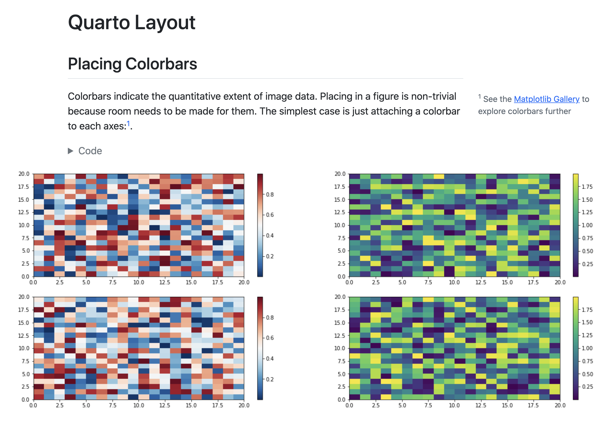

Tutorial: Authoring
Overview
In this tutorial we’ll explore more of Quarto’s authoring features. We’ll cover rendering documents in multiple formats and show you how to add components like table of contents, equations, citations, cross-references, and more.
Output Formats
Quarto supports rendering notebooks to dozens of different output formats. By default, the html format is used, but you can specify an alternate format (or formats) within document options.
Format Options
Let’s create a new file (authoring.qmd) and define various formats for it to be rendered to, adding some options to each of the formats. As a reminder, document options are specified in YAML at the beginning of the source file.
---
title: "Quarto Document"
author: "Norah Jones"
format: pdf
---We specified pdf as the default output format (if we exclude the format option then it will default to html).
Let’s add some options to control our PDF output.
---
title: "Quarto Document"
author: "Norah Jones"
format:
pdf:
toc: true
number-sections: true
---Multiple Formats
Some documents you create will have only a single output format, however in many cases it will be desirable to support multiple formats. Let’s add the html and docx formats to our document.
---
title: "Quarto Document"
author: "Norah Jones"
toc: true
number-sections: true
highlight-style: pygments
format:
html:
code-fold: true
html-math-method: katex
pdf:
geometry:
- top=30mm
- left=20mm
docx: default
---There’s a lot to take in here! Let’s break it down a bit. The first two lines are generic document metadata that aren’t related to output formats at all.
title: "Quarto Document"
author: "Norah Jones"The next three lines are document format options that apply to all formats. which is why they are specified at the root level.
toc: true
number-sections: true
highlight-style: pygmentsNext, we have the format option, where we provide format-specific options.
format:
html:
code-fold: true
html-math-method: katex
pdf:
geometry:
- top=30mm
- left=20mm
docx: defaultThe html and pdf formats each provide an option or two. For example, for the HTML output we want the user to have control over whether to show or hide the code (code-fold: true) and use katex for math text. For PDF we define some margins. The docx format is a bit different—it specifies docx: default. This means just use all of the default options for the format.
Rendering
The formats specified within document options define what is rendered by default. If we render the document with all the options given above using the following.
Terminal
quarto render authoring.qmdThen the following files would be created.
authoring.htmlauthoring.pdfauthoring.docx
We can select one or more formats using the --to option.
Terminal
quarto render authoring.qmd --to docx
quarto render authoring.qmd --to docx,pdfNote that the target file (in this case authoring.qmd) should always be the very first command line argument.
If needed we can also render formats that aren’t specified within document options.
Terminal
quarto render authoring.qmd --to odtSince the odt format isn’t included within document options, the default options for the format will be used.
Sections
You can use a table of contents and/or section numbering to make it easier for readers to navigate your document. Do this by adding the toc and/or number-sections options to document options. Note that these options are typically specified at the root level because they are shared across all formats.
---
title: Quarto Basics
author: Norah Jones
date: 'May 22, 2021'
toc: true
number-sections: true
---
## Colors
- Red
- Green
- Blue
## Shapes
- Square
- Circle
- Triangle
## Textures
- Smooth
- Bumpy
- FuzzyHere’s what this document looks like when rendered to HTML.

There are lots of options available for controlling how the table of contents and section numbering behave. See the output format documentation (e.g. HTML, PDF, MS Word) for additional details.
Equations
You can use LaTeX equations within markdown.
Einstein's theory of special relatively that expresses the equivalence of mass and energy:
$E = mc^{2}$This appears as follows when rendered.
Einstein’s theory of special relatively that expresses the equivalence of mass and energy:
\(E = mc^{2}\)
Inline equations are delimited with $…$. To create equations in a new line (display equation) use $$…$$. See the documentation on markdown equations for additional details.
Citations
To cite other works within a Quarto document. First create a bibliography file in a supported format (BibTeX or CSL). Then, link the bibliography to your document using the bibliography YAML metadata option.
Here’s a document that includes a bibliography and single citation.
---
title: Quarto Basics
format: html
bibliography: references.bib
jupyter: python3
---
## Overview
Knuth says always be literate [@knuth1984].
```{python}
1 + 1
```
## ReferencesNote that items within the bibliography are cited using the @citeid syntax.
Knuth says always be literate [@knuth1984].References will be included at the end of the document, so we include a ## References heading at the bottom of the source file.
Here is what this document looks like when rendered.

The @ citation syntax is very flexible and includes support for prefixes, suffixes, locators, and in-text citations. See the documentation on Citations and Footnotes to learn more.
Cross References
Cross-references make it easier for readers to navigate your document by providing numbered references and hyperlinks to figures, tables, equations, and sections. Cross-reference-able entities generally require a label (unique identifier) and a caption.
This example illustrates cross-referencing various types of entities.
---
title: Quarto Crossrefs
format: html
jupyter: python3
---
## Overview
See @fig-simple in @sec-plot for a demonstration of a simple plot.
See @eq-stddev to better understand standard deviation.
## Plot {#sec-plot}
```{python}
#| label: fig-simple
#| fig-cap: "Simple Plot"
import matplotlib.pyplot as plt
plt.plot([1,23,2,4])
plt.show()
```
## Equation {#sec-equation}
$$
s = \sqrt{\frac{1}{N-1} \sum_{i=1}^N (x_i - \overline{x})^2}
$$ {#eq-stddev}We cross-referenced sections, figures, and equations. The table below shows how we expressed each of these.
| Entity | Reference | Label / Caption |
|---|---|---|
| Section | @sec-plot |
ID added to heading: |
| Figure | @fig-simple |
YAML options in code cell: |
| Equation | @eq-stddev |
At end of display equation: |
And finally, here is what this document looks like when rendered.

See the article on Cross References to learn more, including how to customize caption and reference text (e.g. use “Fig.” rather than “Figure”).
Callouts
Callouts are an excellent way to draw extra attention to certain concepts, or to more clearly indicate that certain content is supplemental or applicable to only some scenarios.
Callouts are markdown divs that have special callout attributes. To create a callout within a markdown cell, type the following in your document.
::: {.callout-note}
Note that there are five types of callouts, including:
`note`, `tip`, `warning`, `caution`, and `important`.
:::This appears as follows when rendered.
Note that there are five types of callouts, including note, tip, warning, caution, and important.
You can learn more about the different types of callouts and options for their appearance in the Callouts documentation.
Article Layout
The body of Quarto articles have a default width of approximately 700 pixels. This width is chosen to optimize readability. This normally leaves some available space in the document margins and there are a few ways you can take advantage of this space.
In this example, we use the reference-location option to indicate that we would like footnotes to be placed in the right margin.
We also use the column: screen-inset cell option to indicate we would like our figure to occupy the full width of the screen, with a small inset.
---
title: Quarto Layout
format: html
reference-location: margin
jupyter: python3
---
## Placing Colorbars
Colorbars indicate the quantitative extent of image data.
Placing in a figure is non-trivial because room needs to
be made for them. The simplest case is just attaching a
colorbar to each axes:^[See the [Matplotlib Gallery](https://matplotlib.org/stable/gallery/subplots_axes_and_figures/colorbar_placement.html) to explore colorbars further].
```{python}
#| code-fold: true
#| column: screen-inset
import matplotlib.pyplot as plt
import numpy as np
fig, axs = plt.subplots(2, 2)
fig.set_size_inches(20, 8)
cmaps = ['RdBu_r', 'viridis']
for col in range(2):
for row in range(2):
ax = axs[row, col]
pcm = ax.pcolormesh(
np.random.random((20, 20)) * (col + 1),
cmap=cmaps[col]
)
fig.colorbar(pcm, ax=ax)
plt.show()
```Here is what this document looks like when rendered.

You can locate citations, footnotes, and asides in the margin. You can also define custom column spans for figures, tables, or other content. See the documentation on Article Layout for additional details.
Learning More
You’ve now learned the basics of using Quarto! Once you feel comfortable creating and customizing documents here are a few more things to explore:
Presentations — Author PowerPoint, Beamer, and Revealjs presentations using the same syntax you’ve learned for creating documents.
Websites — Publish collections of documents as a website. Websites support multiple forms of navigation and full-text search.
Blogs — Create a blog with an about page, flexible post listings, categories, RSS feeds, and over twenty themes.
Books — Create books and manuscripts in print (PDF, MS Word) and online (HTML, ePub) formats.
Interactivity — Include interactive components to help readers explore the concepts and data you are presenting more deeply.
Additionally, if you are interested in seeing how to use Quarto from within .ipynb notebooks, check out the documentation on using the VS Code Notebook Editor with Quarto.